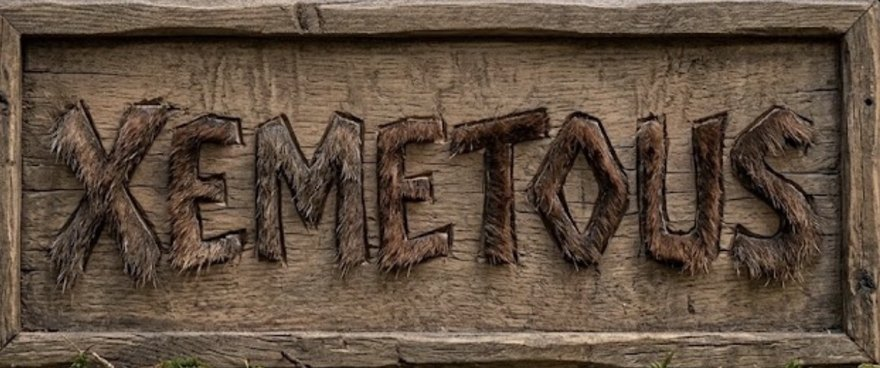

XEMETOUS
AREA SHOOTERSCORE 0残機 ▲▲▲

文字をつかんで、そろえて、撃ち込め。
地上の文字はつかんで動かすと入れ替わる。
言葉が読めたら何か出てくる。
移動：なぞる／マウス／矢印・WASD 通常弾：自動
つかむ・地上弾（照準の1マス）：タッチは長押し／左右クリック／N・M
2回すばやく押す：出てきた物を撃ち出す
ノーマル：こいぬ・こねこ・すいか・ごりら・きりん…
うんち：うんこ・うんち・ちんこ・おちんちん…
Enter・Space で前に選んだモード
MUKKIIALL RIGHTS RESERVED
声：VOICEVOX:春日部つむぎ 音楽・効果音：魔王魂
絵文字：Twemoji（CC-BY 4.0）
声：VOICEVOX:春日部つむぎ 音楽・効果音：魔王魂
絵文字：Twemoji（CC-BY 4.0）
設定
変えた数値はこの端末に残る。プレイ中に開くと一時停止する。キーボードは C で開閉
空の敵は通常弾、地上は地上弾